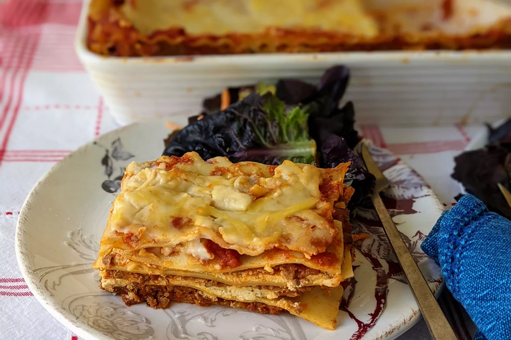

Home
Lasagna al Forno

Description
A hearty and comforting baked pasta dish. Layers of wide, flat pasta sheets are alternated with a rich meat sauce (ragù bolognese), béchamel sauce, and Parmesan cheese, then baked until golden brown and bubbly. It's a staple for family gatherings and special occasions.
Ingredients
- For the Ragù Bolognese (Meat Sauce)
- Ground beef and/or pork
- Pancetta (diced)
- Onion (finely chopped)
- Carrots (finely chopped)
- Celery (finely chopped)
- Garlic (minced)
- Crushed tomatoes (Passata)
- Red wine (optional)
- Beef or vegetable broth (optional)
- Milk (optional, for tenderness)
- Bay leaf (optional)
- Salt
- Black pepper
- Extra-virgin olive oil or butter
- For the Béchamel Sauce (White Sauce)
- Butter
- All-purpose flour
- Milk (warm)
- Salt
- White pepper (optional)
- Freshly grated nutmeg
- For Assembly
- Lasagne pasta sheets (either fresh or dried, note that dried sheets often require boiling beforehand)
- Parmesan cheese (freshly grated)
- Butter (for greasing the dish)
Instructions
- Make the Ragù
- In a large pot or Dutch oven, heat the olive oil or butter over medium heat. Add the pancetta and cook until crispy.
- Add the chopped onion, carrot, and celery. Cook until softened (about 10-15 minutes), stirring occasionally.
- Add the minced garlic and cook for another minute until fragrant.
- Add the ground beef and pork. Brown the meat, breaking it up with a spoon. Drain off any excess fat if necessary.
- If using, pour in the red wine and let it bubble and reduce slightly, scraping up any bits from the bottom of the pot.
- Stir in the crushed tomatoes, broth (if using), milk (if using), bay leaf (if using), salt, and pepper.
- Bring to a gentle simmer, then reduce the heat to low, cover, and let it cook for at least 1-2 hours, or even longer, stirring occasionally. The longer it simmers, the more the flavors develop.
- Make the Béchamel Sauce
- In a saucepan, melt the butter over medium heat.
- Whisk in the flour and cook for 1-2 minutes, stirring constantly, to make a roux. Don't let it brown.
- Gradually whisk in the warm milk, a little at a time, ensuring no lumps form. Keep whisking until the sauce thickens and is smooth.
- Bring to a gentle simmer and cook for a few minutes to cook out the raw flour taste.
- Season with salt, white pepper (if using), and nutmeg. Remove from heat.
- Assemble the Lasagne
- Preheat your oven to 180°C (350°F).
- Grease a large rectangular baking dish with butter.
- Spread a thin layer of béchamel sauce on the bottom of the dish.
- Lay a layer of lasagne sheets over the béchamel (if using dried sheets that require pre-boiling, follow the package instructions).
- Spread a generous layer of ragù over the pasta sheets.
- Spread a layer of béchamel sauce over the ragù.
- Sprinkle with some grated Parmesan cheese.
- Repeat the layers: pasta, ragù, béchamel, Parmesan, until you reach the top of the dish.
- Finish with a layer of béchamel sauce and a generous amount of Parmesan cheese.
- Bake the Lasagne
- Cover the baking dish loosely with aluminum foil.
- Bake for 30-40 minutes.
- Remove the foil and bake for another 15-20 minutes, or until the top is golden brown and bubbly.
- Rest and Serve
- Let the lasagne rest for at least 10-15 minutes before cutting and serving. This allows the layers to set and makes it easier to slice.